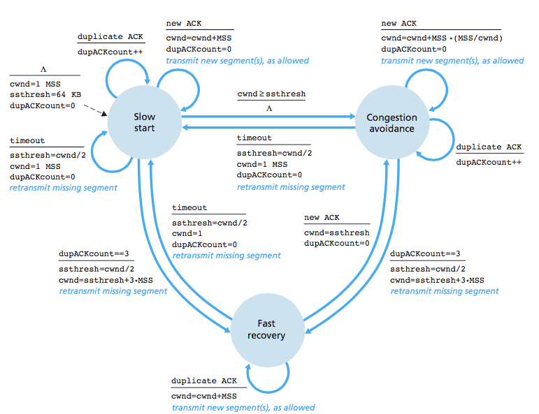

在TCP状态转换图中，需要注意两个状态:
fd leak
多次HTTP请求不一定以为着建立多次TCP连接，即可以复用上一次的TCP连接，通常keep-alive进行配置。
time_wait 存在的目的，或者说为什么TIME_WAIT状态必须等到2MSL时间呢：
TCP协议在关闭连接的四次握手过程中，最终的ACK是由主动关闭连接的一端（后面统称A端）发出的，如果这个ACK丢失，对方（后面统称B端）将重发出最终的FIN，因此A端必须维护状态信息（TIME_WAIT）允许它重发最终的ACK。如果A端不维持TIME_WAIT状态，而是处于CLOSED 状态，那么A端将响应RST，B端收到RST后将解释成一个错误。
简单的来说: 为了主动关闭的一方A端最后一个ACK报文达到B端。因为这个报文有可能丢失，因而使处在LAST-ACK状态的B收不到A发送的最后一个ACK，则B会超时重传FIN+ACK报文，而A就能在2MSL时间内收到这个重传的FIN+ACK报文段。接着A重传一次确认，重新启动2MSL计时器。最终A和B都会正常进入到CLOSED的状态。
如果A在TIME-WAIT状态不等待一段时间，而是在发送完ACK报文段后立即释放连接，那么就无法收到B重传的FIN-ACK报文段，因而也不会再发送一次ACK确认报文段，这样B就无法按照正常步骤进入CLOSED状态。
因而，要实现TCP全双工连接的正常终止，必须处理终止过程中四个分节任何一个分节的丢失情况，主动关闭连接的A端必须维持TIME_WAIT状态 。
TCP包可能由于路由器异常而“迷途”，在迷途期间，TCP发送端可能因确认超时而重发这个包，迷途的包在路由器修复后也会被送到最终目的地，这个迟到的迷途包到达时可能会引起问题。在关闭“前一个连接”之后，马上又重新建立起一个相同的IP和端口之间的“新连接”，“前一个连接”的迷途重复分组在“前一个连接”终止后到达，而被“新连接”收到了。为了避免这个情况，TCP协议不允许处于TIME_WAIT状态的连接启动一个新的可用连接，因为TIME_WAIT状态持续2MSL，就可以保证当成功建立一个新TCP连接的时候，来自旧连接重复分组已经在网络中消逝。
知识点：为什么需要等待2MSL。MSL 是 Maximum Segment Lifetime。每个具体TCP实现必须选择一个报文段最大生存时间MSL(Maximum Segment Lifetime)。它是任何报文段被丢弃前在网络内的最长时间。假设我们在 time_wait 等待的时间小于 2MSL，会出现这样的情况：主动关闭方给对端发送了一个包，只要这个包在 MSL 内到达对端，对端就会回 ACK，如果这个 ACK 也在 MSL 之内回来，那么就可能对新的连接（这里的新连接指的是和原先那个IP/端口都相同的连接）造成影响。如果等待时间是 2MSL，保证一个包和它的ACK在不被网络丢弃的情况下都可以被老的连接收到，而往返一次最大的时间就是 2MSL，如果这次往返时间大于 2MSL，最终的包回被丢弃，也就无法对新连接造成影响。
下图描述了整个linux在接收TCP报文的实现，整个数据包packet的接收从下往上经过了三层：网卡驱动，系统内核空间，最后到达用户态空间。
/proc/sys/net/ipv4/tcp_rmem来修改，cat /proc/sys/net/ipv4/tcp_rmem返回三个值，依次为最小，默认，最大TCP发送报文和接收报文路径相反，数据包的发送从上至下也经过了三层：用户态空间，系统内核空间，网卡驱动。
Ring Buffer或者说环形队列，在Linux TCP实现中是一个十分重要的数据结构，承载了数据流的缓冲。环形队列是一个固定大小的首尾相连的缓冲区间，有指针指向Ring Buffer的头部和下一个Ring Buffer可写入的位置。环形队列的优点在于当队列中的元素被消费之后，不用去移除它。这样即有FIFO的特点，又保证了其高效性。
Ring Buffer的整体数据结构简单，但在Linux TCP实现中是这样的：
sk_buff数据结构 xxxxxxxxxxstruct sk_buff { /* These two members must be first. */ struct sk_buff *next; // sk_buff链表下一个节点 struct sk_buff *prev; // sk_buff链表上一个节点 ktime_t tstamp; // 当前buff到来的时间 struct sock *sk; // socket连接 struct net_device *dev; //网络驱动， 网卡 // ... 其他}sk_buff的中记录下一个位置，在Linux源码实现中，可以看到是后者。在实际业务开发中，其实接触的更多的是HTTP，HTTP底层是TCP协议。使用HTTP协议时，通常会关注几个性能点。
HTTP协议是无状态的，没建立一个TCP连接，都会经过TCP三次握手的流程 。 大量频繁建立HTTP连接，且没有使用到连接复用的技术话，会显著的影响性能。因此在HTTP/1.0+之后HTTP协议加入了keep-alive头部，实现了TCP连接的复用，减少了每次建立HTTP连接三次握手和四次分手的开销。
HTTP/1.1 逐渐停止了对keep-alive连接的支持，用持久化连接(persistent connection)的改进型设计取代了它，其目的和keep-alive是一致的，在持久化连接中，客户端接除非收到了Connection: close 首部，才会断开TCP连接。不然HTTP/1.1连接就仍然维持在打开的状态。客户端和服务器端都可以随时关闭空闲的连接，因此不发送Connection: close并不意味着服务器承诺永远会将此连接保持为打开状态。
TCP数据传输的性能还取决于TCP连接的试用期(age)。TCP连接会随着时间的进行自我“调谐”，起初会限制传输最大速度，如果数据成功传输，即可以提高传输速度，这种“调谐”称之为TCP慢启动(slow start), 用于防止因特网的突然过载和拥塞。慢启动的拥塞窗口的算法如下：
RTT(Round-Trip time)
xxxxxxxxxxInitially cwnd = 1After 1 RTT, cwnd=2^1 = 22 RTT, cwnd = 2^2 = 43 RTT, cwnd = 2^3 = 8
TCP的拥塞控制 (congestion control) 主要由两个部分构成拥塞窗口(cwnd), 和接受端的(rwnd)来控制。TCP的拥塞控制主要有三种状态构成: 慢启动(Slow Start)，拥塞避免(Congestion Avoidance)，快恢复(Fast Recovery). 其主要状态转换图如下：

Nagle算法本质即为TCP层在试图发送一个分组之前，将大量TCP数据绑定在一起，以提高网络效率。Nagle算法可能会引发几种性能问题：
可以在TCP参数栈中设置TCP_NODELAY来禁用Nagle算法